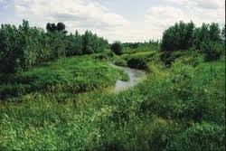
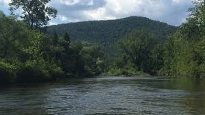
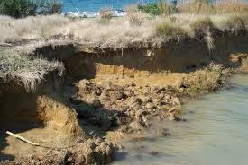
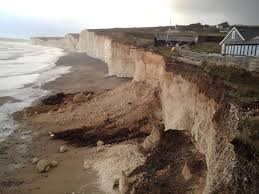
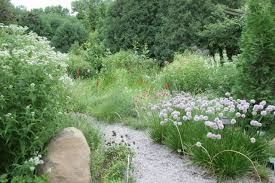
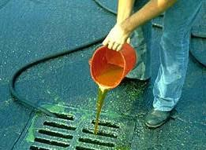
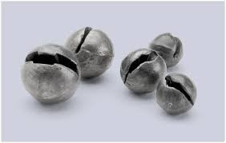
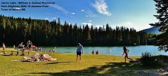

LAKES AND RIVERS
1.
- If you live on a lake, stream or wetland, plant a buffer strip of native plants along the water.
- If you have a lawn, keep it small and don’t use fertilizers and pesticides.
- 
- 
2.
- If you have a septic system make sure it functions properly and meets current standards.
- Consider an alternative wastewater treatment system, such as a composting toilet.
3.
- Go slow in your boat. Big waves erode shorelines.
- 
- 
4.
- When you buy a boat motor, choose a 4-cycle, rather than 2-cycle, engine.
- You will lose less gasoline into the water and cause less air pollution.
5.
- Plant a rain garden, use a rain barrel to catch water from your roof, consider using permeable pavement in your driveway
- runoff that stays on your property will not wash contaminants into streams and other surface waters.
- 
6.
- Never dump wastes into a storm drain. Storm sewers run directly to rivers and lakes.
- 
7.
- In the winter, use less salt on your sidewalks and driveway.
- Let your public officials know you support efforts to reduce the amount of road salt applied to roads and bridges.
- Chloride from road salt is building up in lakes and aquifers that receive runoff from highways.
8.
- If you fish, consider putting away your lead sinkers and jigs and switching to non-toxic tackle.
- Loons, trumpeter swans and some other waterfowl are susceptible to contracting lead poisoning from tackle they pick up off lake bottoms.
- 
9.
- Don’t use the lake as a bathtub. Soaps and shampoos contain nutrients and pollutants that are harmful to the lake and organisms living in it.
- 